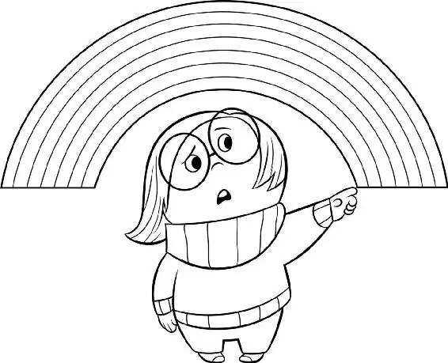

“Bing Bong, we have to get to that station,” Joy said. She couldn’t believe they had lost another island. The train whistled in the distance, which made her feel even more anxious.
“Sure thing,” Bing Bong said. “This way, just past Graham Cracker Castle.” But then he stopped and looked around, confused. The castle was gone. “I wonder why they moved it?” he asked. He walked a bit farther. Suddenly, he realized things didn’t look right.
A giant bulldozer came hurtling toward him and knocked over a pink castle. Bing Bong gasped.
“Princess Dream World!” Glitter flew into the air as the castle disintegrated. All of Preschool World was being torn down!
“My rocket!” Bing Bong screamed as he saw the Forgetters walking by with a red wagon. He ran after it. “Wait!” he yelled as a bulldozer pushed the pile of old memories closer and closer to the cliff edge. “Riley and I were still using that rocket! It still has some song power left!”
He desperately sang the song that powered the rocket and it responded, binging and bonging back at him and firing up. It rocketed into the air, then dove straight over the cliff! “Nooo!” Bing Bong screamed. “You can’t take my rocket to the dump! Riley and I are going to the moon!” He watched in shock as the rocket disappeared into the infinite darkness of the dump below. “Riley can’t be done with me,” he said, feeling heartbroken and falling to his knees.
Joy could think of only one thing: she had to get to the station. So she tried to pep Bing Bong up. “Hey, it’s going to be okay. We can fix this. We just need to get back to Headquarters. Which way to the train station?” Bing Bong had no reaction. He was frozen with grief.
“I had a whole trip planned for us,” he said quietly.
“Here comes the tickle monster,” Joy said, as she tried a different tactic. She tickled him, but he didn’t respond. She even tried making funny faces, but her silliness wasn’t snapping Bing Bong out of his misery. “Oh, here comes a fun game. You point to the train station, and we’ll go there,” Joy said. Bing Bong remained motionless.
Sadness walked over and sat down next to him. “I’m sorry they took your rocket,” she said gently. “They took something that you loved and it’s gone… forever.”
“Sadness, don’t make him feel worse,” Joy said.
“Sorry,” said Sadness.
“It’s all I had left of Riley,” said Bing Bong.
“I bet you and Riley had great adventures,” Sadness said.
“They were wonderful. Once, we flew back in time. We had breakfast twice that day.”
“That sounds amazing. I bet Riley liked it.”
“Oh, she did. We were best friends,” Bing Bong said. He started to cry.
“Yeah,” said Sadness. “It is sad.”
Bing Bong put his head on Sadness’s shoulder and cried candy tears. Sadness put her arm around him and tried to comfort him as he sobbed.
After a good cry, Bing Bong wiped his eyes and took a deep breath. “I’m okay now,” he said with a sniffle. He stood up and looked around. “C’mon. The train station is this way.” He started to walk toward it. Joy looked at Sadness in disbelief. “How did you do that?” she asked.
“I don’t know,” said Sadness. “He was sad, so I listened to what—”
“Hey, there’s the train!” Bing Bong called.
The three ran up to the train and climbed aboard just as it was starting up. “We made it!” Joy said. “We’re finally going to get home!”
Back in Headquarters, Anger, Fear, and Disgust ranted about the terrible day they’d had. “On a scale of one to ten, I give this day an F,” said Disgust.
“Well, why don’t we quit standing around and do something,” Anger suggested, dropping his newspaper, which was emblazoned with the headline “Riley Quits Hockey!”
Fear thought they all should quit their jobs as Riley’s Emotions. He knew it was the coward’s way out, but since he was Fear, he was okay with that.
“Emotions don’t quit, genius,” Disgust said.
Suddenly, Anger ran to the back and rummaged through the ideas, looking for something. “Aha!” he shouted, holding up an idea bulb triumphantly. He believed he’d found the solution they needed to fix everything for Riley. “Just the best idea ever!” he announced.
“What?” Disgust asked.
“All the good core memories were made in Minnesota,” Anger said. “Ergo, we go back to Minnesota and make more. Ta-da!”
“Wait, wait, wait. You’re saying we run away?” asked Fear. “You can’t be serious.”
“Our life was perfect until Mom and Dad decided to move to San Fran Stinktown,” said Anger.
“But, I mean, it’s just so… drastic,” said Fear.
“Need I remind you how great things were there? Our room? Our backyard? Our friends?” Anger punched up a memory, playing it on the screen.
The Tripledent gum commercial song played throughout Headquarters. “Did I ask for the gum commercial?” Annoyed, Anger slapped his hand against the console, ejecting the memory. “Anyway, it was better. That’s my point.”
“Yeah, Riley was happier in Minnesota… ,” said Disgust, nodding her head.
“Shouldn’t we just sleep on it or something?” asked Fear.
“Fine. Let’s sleep on it,” Anger said, crossing his arms over his chest. “Because hey—I’m sure jolly, fun-filled times are just around the corner.”
Inside her bedroom, Riley drifted off to sleep.
With Riley asleep, day turned to night in Mind World and the Train of Thought came to a screeching halt. “Huh?” Joy was confused. “Hey! Why aren’t we moving?”
“Riley’s gone to sleep,” the train engineer said. “We’re all on break.”
“You mean we’re stuck here until morning?” asked Sadness.
“Yeah, the Train of Thought doesn’t run while she’s asleep,” answered Bing Bong.
“Oh, we can’t wait that long!” groaned Joy.
